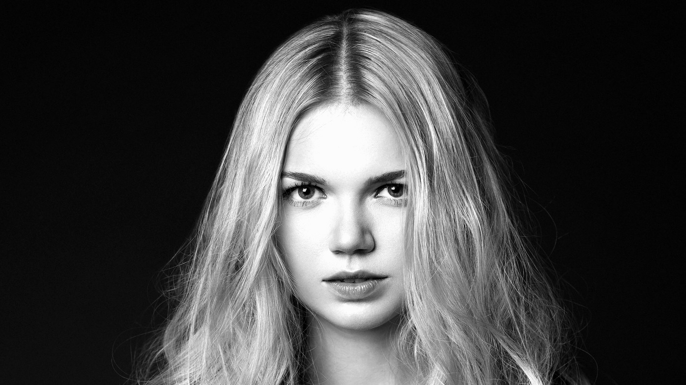

Extensions
Great Lengths
Volume, longueur, transformations. Great Lengths, référence mondiale de l'extension naturelle, pour une pose soignée et durable.

Great Lengths est la référence mondiale de l'extension capillaire. Fondée à Rome en 1992, la marque s'est imposée comme le standard de qualité dans les salons professionnels du monde entier — grâce à des mèches 100 % cheveux naturels, une technologie de fusion brevetée et une gamme de nuances inégalée.
Chez Prestige Coiffure, nous travaillons avec Great Lengths parce que c'est la technique la plus respectueuse du cheveu naturel. La fixation "tapes", préserve l'intégrité de la fibre et permet une tenue d'environ 2 mois reconductibles avec les mêmes extensions, sans abîmer la chevelure native.
Une transformation sur mesure.
Chaque pose est précédée d'une consultation obligatoire. Nous évaluons l'état de vos cheveux naturels, définissons ensemble le volume et la longueur souhaités, choisissons la ou les nuances parmi des centaines de teintes disponibles, et établissons un devis personnalisé. La pose elle-même demande entre 30 minutes et 2 heures selon le nombre de tapes.
Consultation préalable & devis personnalisé
Évaluation de vos cheveux naturels, discussion sur le résultat souhaité. Choix du nombre d'extensions, des longueurs et de la nuance. Remise d'un devis détaillé.
Préparation du cheveu naturel
Shampoing clarifiant pour nettoyer et dégraisser la fibre capillaire. La propreté du cheveu naturel est essentielle pour garantir la tenue de la fixation.
Pose des tapes
Les tapes sont des bandes adhésives de cheveux naturels conçues pour ne causer aucune tension. Grâce à ces bandes plates sur la tête, elles garantissent un effet naturel.
Coupe & coiffage finition
Harmonisation des longueurs par une coupe de finition. Coiffage pour révéler le résultat final et vous montrer les gestes d'entretien à adopter.
Les GL Tapes de Great Lengths sont des extensions adhésives haut de gamme en cheveux 100 % naturels, conçues pour une pose rapide, discrète et confortable. Une excellente tenue garantie.
Un investissement qui s'étale dans le temps. Avec un entretien adapté, vos extensions restent belles et naturelles sans nécessiter d'intervention.
Great Lengths propose des centaines de nuances et plusieurs longueurs disponibles. Nous pouvons combiner plusieurs tons pour un résultat parfaitement naturel ou légèrement contrasté.
Les GL Tapes Great Lengths en bon état peuvent être réutilisées jusqu'à 3 fois.
Les extensions Great Lengths tiennent en moyenne 2 mois selon la vitesse de pousse de vos cheveux naturels et l'entretien à domicile. Une dépose et repose peuvent être envisagées pour prolonger l'expérience, en réutilisant les GL Tapes jusqu'à 3 fois.
Nous recommandons un shampoing doux sans sulfates, appliqué délicatement en évitant de frotter les zones de fixation. Un démêlage doux, de bas en haut, avec une brosse adaptée aux extensions est essentiel. Évitez de dormir avec les cheveux mouillés et utilisez un protecteur thermique avant tout séchage ou coiffage à la chaleur. Davines propose une large gamme de produits sans SLS.
Oui — une consultation préalable est obligatoire avant toute pose d'extensions Great Lengths. Elle nous permet d'évaluer l'état de vos cheveux naturels, de définir le nombre de mèches nécessaires, de choisir la nuance et de vous remettre un devis personnalisé.
Prête pour votre transformation ?
Commencez par la consultation — disponible sur Planity, 7j/7.
Prendre RDV consultation